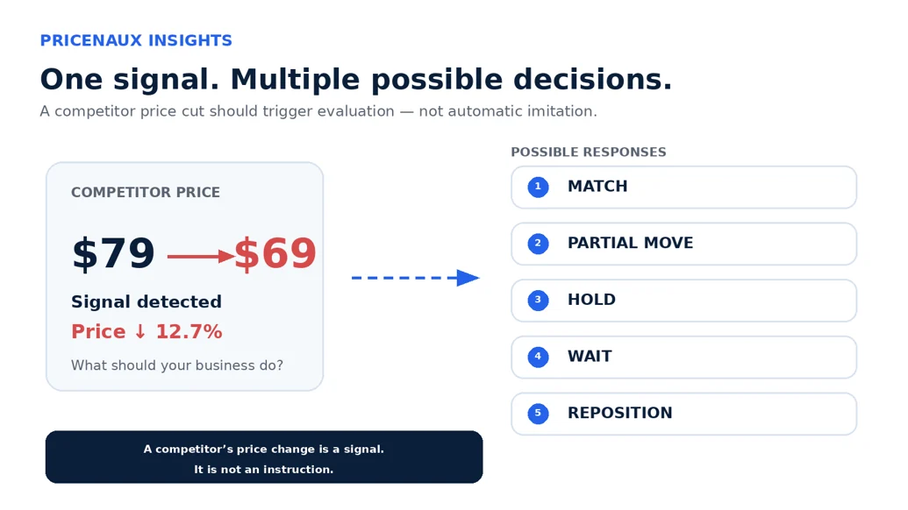
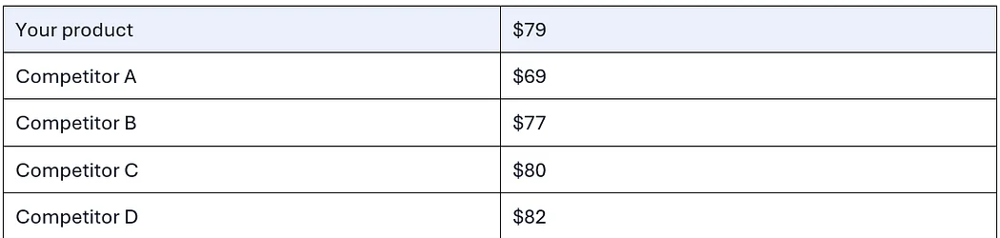
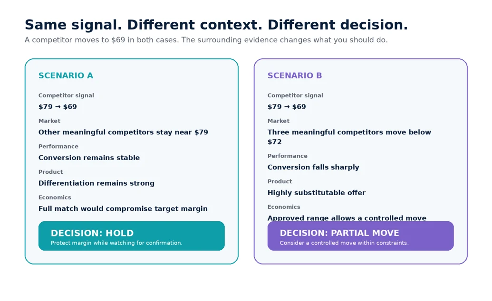
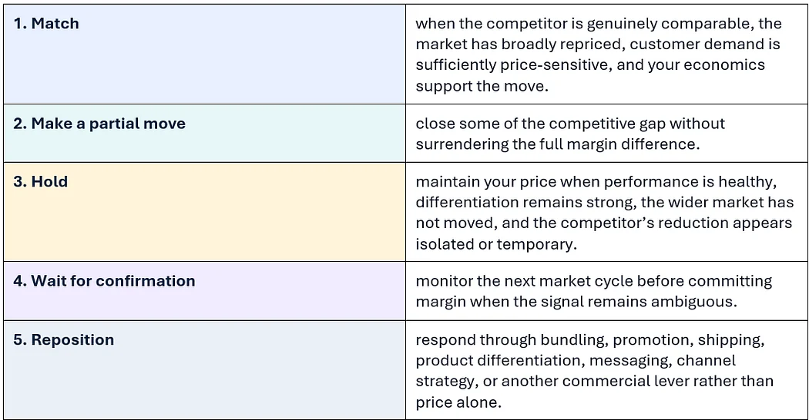
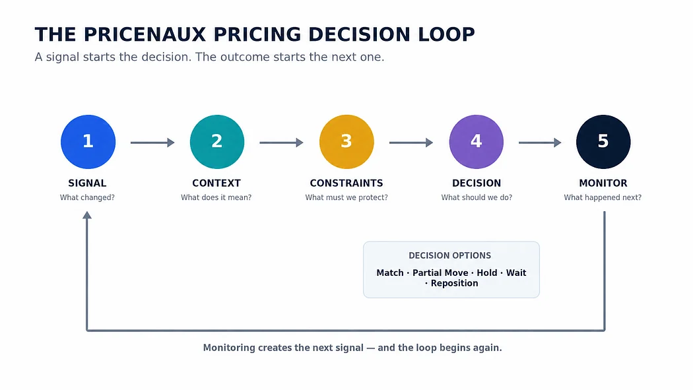

Nermin Sad · CEO & Co-founder
Nermin Sad · CEO & Co-founder
Figure 1. One competitor price signal can support several different commercial responses
You’ve read some version of this Tuesday morning before in this series.
A competitor lowers the price of one of your best-selling products.
Your dashboard notices.
Someone on the team asks whether you should follow.
Until now, we’ve used that moment to explain the pricing problem.
This time, let’s actually make the decision.
A competitor’s price change is a signal. It is not an instruction.
A lower competitor price may deserve an immediate response.
It may deserve a smaller response.
It may deserve no response at all.
The difference depends on everything surrounding that price: the market, the product, your margins, customer sensitivity, inventory, brand position, business objective, and what the competitor may actually be trying to achieve.
That is the line between watching prices and understanding them.
And it is the line between reactive pricing and pricing intelligence.
1. Should You Match a Competitor’s Price Drop?
Imagine your product is selling at $79.
One meaningful competitor moves from $79 to $69.
That is a 12.7% reduction.
The signal is impossible to miss.
The natural response is equally obvious:
Should we match them?
For many merchants, that question becomes the entire competitive pricing strategy.
A competitor moves. The business reacts.
Sometimes the response comes from an automated repricing rule. Sometimes someone changes the price manually. Sometimes the team waits until sales decline before doing anything.
But in each case, the competitor is effectively deciding when the business should reconsider its own price.
That is a dangerous position to be in.
In our previous post, we described three broad pricing operating profiles:
Gut Pricers rely heavily on instinct.
Reactive Pricers monitor signals but tend to act after something has already changed.
Signal-Aware Pricers use structured monitoring, rules, context, and commercial constraints to determine what a signal actually means.
A competitor dropping from $79 to $69 is exactly where those approaches begin to separate.
The Gut Pricer might say:
“That feels too aggressive. Let’s wait.”
The Reactive Pricer might say:
“They dropped 12.7%. We need to stay competitive.”
The Signal-Aware Pricer asks a different question:
“What changed — and does that change justify a decision from us?”
That question may sound more deliberate.
In practice, it can lead to a faster and much more defensible decision.
2. Before Responding, Understand the Signal
The competitor price is real.
What it means is not yet clear.
Consider this illustrative market:

Your product is priced at $79 while only one competitor has dropped sharply to $69; the remaining competitors stay between $77 and $82. A single price move may be worth monitoring before reacting.
Only one competitor has moved.
That is very different from discovering that all four competitors have suddenly moved into the $68–$72 range.
Before changing your price, you need context.
Is Competitor A running a short promotion?
Are they clearing inventory?
Did their effective price fall because of a coupon or channel-specific offer?
Is the competing product genuinely comparable to yours?
Do they offer the same shipping terms, warranty, bundle, fulfillment experience, reviews, brand recognition, or product quality?
Have they historically maintained aggressive prices, or do they frequently drop and recover?
Most importantly:
Has anything changed in your own commercial performance?
If your conversion remains stable, demand is healthy, margin remains strong, and the rest of the market has not followed, the price cut may be something worth monitoring rather than something worth matching.
The number tells you what happened.
The surrounding signals help explain what it means.
Price movement without context is information, not intelligence.
That distinction matters because reacting to every visible movement creates its own risk.
A merchant can become highly responsive to competitors while becoming less disciplined about its own economics.
You may feel more competitive because your prices move quickly.
Meanwhile, your margins are being influenced by businesses whose costs, objectives, inventory positions, and strategies you do not know.
3. Context Determines How Important the Signal Really Is
Now let’s add more information to the example.
Your product remains at $79.
Competitor A has dropped to $69.
The other meaningful competitors remain between $77 and $82.
Your conversion has not materially changed.
Demand remains within its normal range.
There is no immediate inventory pressure.
And Competitor A appears to be running a temporary promotion.
Does the $69 price still matter?
Absolutely.
But it does not carry the same weight it would if several other signals changed with it.
Now change the scenario.
Competitor A drops to $69.
Competitor B moves to $71.
Competitor C moves to $70.
Your conversion begins falling.
Your product is highly substitutable, with little differentiation between competing offers.
Suddenly, the original signal means something very different.
This is why competitor price monitoring alone is not enough.
The question is not simply:
“What are competitors charging?”
It is:
“What is happening across the market, and how exposed are we to it?”
Market structure matters.
Price sensitivity matters.
Brand positioning matters.
Channel dynamics matter.
A differentiated Shopify brand may have more room to hold price than a seller competing among nearly identical offers on Amazon.
A commodity product may respond sharply to a relatively small price gap.
A differentiated product may not.
One competitor cutting price may be noise.
Several meaningful competitors moving together may indicate a broader market change.
The intelligent response comes from evaluating those signals together.

Figure 2. The same competitor price can lead to a different decision when the surrounding market and business context changes.
4. Your Constraints Come Before Your Response
There is another mistake merchants can make when competitor pressure appears.
They ask:
“How low do we need to go?”
before asking:
“What are we trying to protect?”
Continue with the same illustrative example.
Your current price is $79.
Assume your economics establish two internal boundaries:
You have a hard price floor of $67 — below that point, the product no longer meets the minimum economics the business is prepared to accept.
You also normally want the product priced at $74 or above to preserve your target margin.
Competitor A is now at $69.
Technically, you could match them without crossing the absolute floor.
But that does not mean you should.
Matching $69 would require the business to make a deliberate margin concession.
There may be situations where that concession is strategically justified.
Perhaps the product is an acquisition SKU.
Perhaps inventory needs to move urgently.
Perhaps maintaining marketplace visibility has greater downstream value.
Perhaps customer demand is highly price-sensitive and the expected volume response supports the tradeoff.
But those are commercial reasons.
“They lowered their price” is not.
A strong pricing decision therefore needs constraints before it needs automation.
Those constraints may include:
- minimum acceptable margin
- landed product cost and marketplace fees
- inventory position
- desired revenue or profit objective
- brand positioning
- promotional strategy
- channel-specific considerations
- acceptable risk
- the role the product plays in the broader portfolio
Without those constraints, a pricing engine can become very efficient at making commercially weak decisions.
As we discussed in our first article on how pricing decisions quietly leak margin, revenue can remain healthy while weak pricing economics accumulate underneath it.
This distinction matters:
The fastest route to a competitive price is not always the fastest route to a profitable business.
5. Five Ways to Respond When a Competitor Cuts Their Price
Depending on the context, an e-commerce merchant has five reasonable responses to a competitor’s price cut:

A competitor price cut does not require a single automatic response. Depending on market context, customer sensitivity, margins, and business constraints, the right decision may be to match, make a partial move, hold, wait for confirmation, or reposition.
The important point is that each action follows from a different interpretation of the same signal.
This is where pricing intelligence becomes more valuable than simple repricing.
Good pricing intelligence doesn’t merely calculate a price. It evaluates possible decisions.
Return to our example.
Only Competitor A has moved to $69.
Everyone else remains near your $79 price.
Your conversion is stable.
Your inventory is healthy.
Your normal margin target would be compromised by a full match.
The competitor’s reduction appears promotional.
A reasonable decision may be:
Hold at $79 and monitor.
Now change two variables.
Three meaningful competitors move below $72.
Your conversion declines sharply at the same time.
The original $69 signal is no longer isolated. It is now supported by market movement and your own performance data.
The decision deserves to be reconsidered.
Perhaps the recommendation becomes a controlled reduction within your approved pricing range.
Perhaps another scenario creates a stronger case for matching.
The point is not that holding is always right.
It is that the same competitor price can produce different decisions when the commercial context changes.
That is what reactive pricing misses.
6. The Decision Isn’t Finished When the Price Changes
Traditional pricing workflows often end with the action.
Price changed.
Task completed.
But commercially, that is only halfway through the decision.
You still need to know whether the decision worked.
A useful way to think about the process is as a continuous loop:

Figure 3. The Pricenaux Pricing Decision Loop: Signal → Context → Constraints → Decision → Monitor → next Signal.
Suppose you hold your $79 price.
Over the next monitoring cycle, your conversion remains stable.
Competitor A eventually returns to $79.
The rest of the market never moves.
Your decision to hold protected margin without creating a measurable loss in competitiveness.
Had you automatically matched the $69 price, you may have surrendered margin in response to a temporary signal that never required action.
But suppose the opposite happens.
Competitor A stays at $69.
Two other competitors follow.
Your conversion weakens.
Now the monitoring stage has produced new information.
That information becomes the next signal.
The decision loop begins again.
This matters because no pricing recommendation should be treated as permanently correct.
Markets change.
Competitors respond.
Customers sometimes behave differently than expected.
Costs move.
Inventory accumulates or sells through.
The value of a decision system is not that it predicts every outcome perfectly.
It is that the business can see what happened, learn from it, and make the next decision with more context than the last.
That is the difference between a pricing action and a pricing system.
7. What AI Should — and Shouldn’t — Do
This is where AI becomes useful.
Not because every price should simply be handed over to an algorithm.
And not because the objective should be changing prices as frequently as technology allows.
AI becomes valuable because the number of signals surrounding a commercial decision can quickly become difficult for a human team to evaluate consistently across a growing catalog.
A useful pricing intelligence system should help:
- Detect the signal.
- Contextualize what is happening around it.
- Evaluate the commercial constraints.
- Compare possible decisions.
- Recommend an action and explain why.
- Express confidence and risk rather than pretending every recommendation is certain.
- Monitor what happened after the decision.
The human decision-maker should still understand the logic.
If the system recommends lowering a price, the merchant should be able to ask:
Why?
Which signals mattered?
What alternatives were considered?
What margin are we protecting?
What happens if we do nothing?
How confident are we?
What should we monitor next?
“Competitor price decreased by 12.7%” is not enough explanation.
Neither is: “AI recommends $71.42.”
A commercially useful recommendation should connect the signal to the reasoning behind the action.
That becomes even more important as pricing processes become increasingly automated.
Automation without context simply accelerates whatever logic sits underneath it.
If the logic is weak, automation makes the mistake faster.
If the logic is commercially disciplined, automation can make better decision-making scalable.
The goal of AI pricing isn’t to change prices faster. It’s to make better commercial decisions faster.
Founder Reflection
The more we work on pricing intelligence at Pricenaux, the more convinced I become that the hardest part of pricing is rarely seeing that something changed.
Merchants already have signals everywhere.
Competitor prices move.
Margins change.
Sales accelerate.
Conversion slows.
Inventory builds.
Costs increase.
Amazon visibility shifts.
Shopify performance tells another story.
The difficult question comes after all of that:
Which signal deserves a response — and what should the response be?
That is why I don’t believe the future of e-commerce pricing is simply faster repricing.
The opportunity is bigger.
It is giving merchants a structured way to connect market signals, product economics, business constraints, and human judgment before a decision is made — and then learning from what happens afterward.
Because sometimes the intelligent decision is to lower the price.
Sometimes it is to move only part of the way.
And sometimes the most valuable pricing recommendation an intelligent system can make is:
Do nothing yet.
— Nermin Sad, CEO & Co-founder, Pricenaux
Final Thought
The next time a competitor cuts their price, resist the temptation to make their number your strategy.
Start with five questions:
What is the signal?
What is the context?
What constraints must we protect?
What decision does the evidence support?
What will we monitor afterward?
That is how a competitor’s price stops being an instruction and becomes one input into a commercial decision.
And that is the shift from reactive pricing to pricing intelligence.
If you’re unsure whether your business already has the margin floors, monitoring, decision rules, and pricing discipline needed to make decisions like this consistently, the Pricenaux Free Pricing Audit can help identify where the gaps are.
Start the Free Pricing Audit →
When a competitor moves tomorrow, will your business know what to do — or only know that something happened?
Have a perspective on this topic?
Continue the discussion with Pricenaux and other operators on LinkedIn.
Join the LinkedIn DiscussionHow mature is your pricing process?
Benchmark your pricing approach, identify decision gaps, and see where stronger guardrails or intelligence could protect margin.